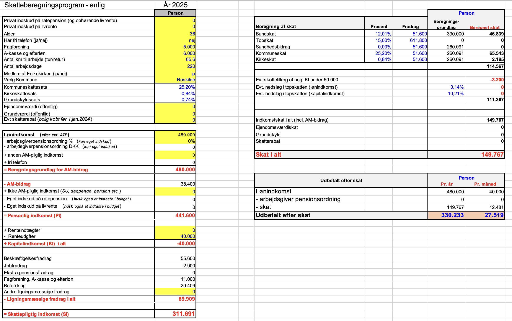
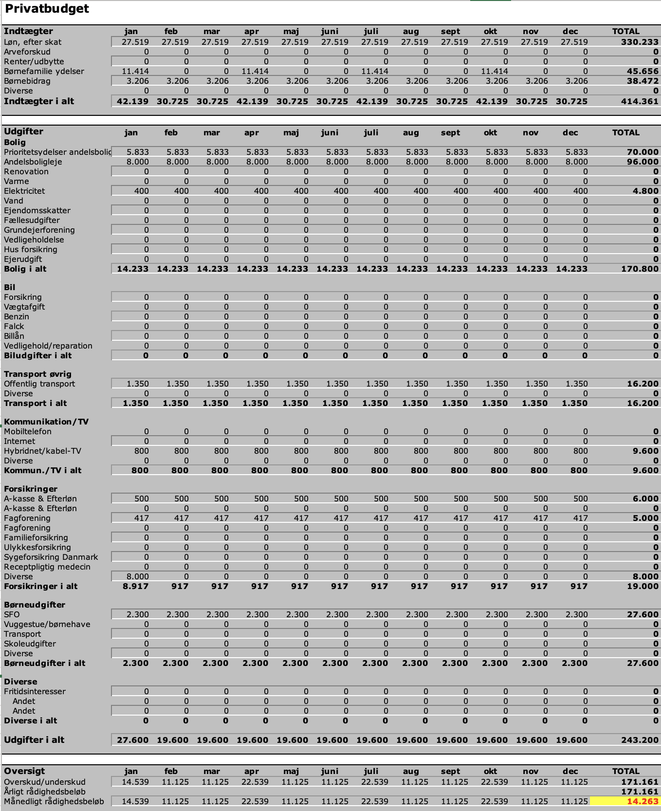

Formål:
Du har netop overtaget Emma Hansen som din nye kunde i banken.
Derudover har hun følgende faste udgifter:  
Børne- og ungeydelse (børneydelse) er en skattefri ydelse. Den indgår derfor ikke i Emmas skattepligtige indkomst og påvirker ikke selve skatteberegningen, men har stor betydning for hendes disponible indkomst.
Aktivitet uge 1 - Løsningsforslag
Finansiel rådgivning - Privat
Løsningsforslag
Emma Hansen
Du bør til denne opgave benytte følgende materialer:
Kapitel 1 - Skattesystemet 2026
Skatteberegner (skat.tepedu.dk)
At beregne skat for en privatkunde ved hjælp af skatteskabelonen.
Anslået tidsforbrug:
5 timer
Opgave:
Besvar spørgsmålene, upload i Workshop inden deadline.
Her kan du se undervisers løsningsforslag og sammenligne med din egen
opgave, din sammenligning er til dit
eget brug.
Feedback:
Du får feedback ved at sammenligne din besvarelse med løsningsforslaget til aktiviteten i uge 1.
Alle aktiviteter og opgaver i faget er obligatoriske.
Oplysninger
Hun bor i Roskilde og er 36 og uddannet skolelærer. Hendes løn er 480.000 kr. om året.
Du har her lidt yderligere oplysninger om Emma:
Spørgsmål 1
Benyt skatteberegneren på skat.tepedu.dk
Løsningsforslag:
Emma har 27.519 kr udbetalt efter skat hver måned.
Emma Hansen Excel skatteskabelonen
Spørgsmål 2
a) Beregn hendes beregningsgrundlag for arbejdsmarkedsbidrag.
b) Bestem hendes personlige indkomst.
c) Bestem hendes skattepligtige indkomst.
Benyt skatteberegneren på skat.tepedu.dk og kapitel 1 som støtte.
Løsningsforslag:
Se nedenstående uddrag fra skatteskabelonen, hvor beregningsgrundlag for AM-bidrag, personlig indkomst og skattepligtig indkomst er markeret.
Emma Hansen Excel skatteskabelonen
Spørgsmål 3
Redegør kort for, hvordan disse to ydelser behandles skattemæssigt, og hvad det betyder for Emmas skatteberegning – uden at opstille et egentligt budget.
Benyt kapitel 1 og skatteskabelonen som støtte.
Løsningsforslag:
Børnebidrag er også skattefrit for modtageren. Bidraget er fradragsberettiget for den, der betaler, men for Emma som modtager betyder det, at beløbet heller ikke beskattes og derfor heller ikke fremgår som skattepligtig indkomst i skatteberegningen.
Samlet betyder det, at Emmas skat beregnes på baggrund af hendes lønindkomst og fradrag, mens de to børnerelaterede ydelser kun skal indgå i et eventuelt budget og ikke i selve skatteberegningen i uge 1.